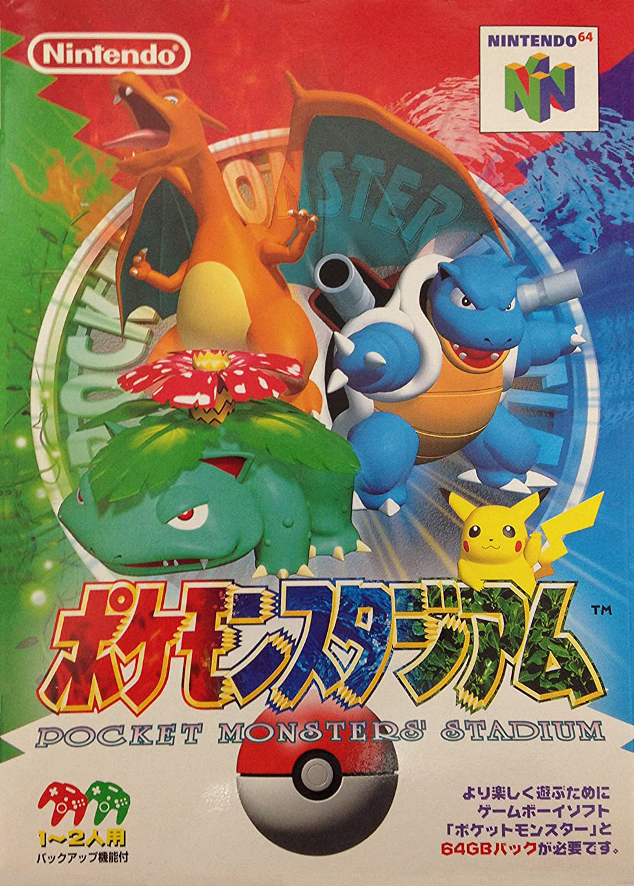

Historia
Primero lo primero... aclaremos la confusión:
La historia de Pokemon Stadium empieza solo para Japon, donde fue desarrollado por Nintendo EAD en conjunto con HAL Laboratory, bajo la producción de Shigeru Miyamoto (sí, el creador de Mario y Zelda), quien lanzó la primera edición en 1998 (ポケモンスタジアム, Pocket Monsters Stadium en japonés). Originalmente se planeó como un proyecto más limitado, pero debido al éxito rotundo de Pokémon en todo el mundo, se expandió al lanzamiento de la secuela en 1999 (ポケモンスタジアム２, Pocket Monsters Stadium 2), la que también se estrenaría para América y Europa como la primera versión de Pokémon Stadium para occidente, seguida de Pókemo Stadium 2 en 2001.
Pokémon Stadium fue uno de los títulos más llamativos de Nintendo 64 por traer a los Pokémon de Game Boy al 3D, en un tiempo donde ver a tus criaturas favoritas fuera de la pantalla portátil era toda una revolución.
Algunos datos
- Fue el primer juego de Pokémon en 3D, lo que marcó un antes y un después en la franquicia.
- Se usaba el Transfer Pak, un accesorio del Nintendo 64 que permitía transferir a tus Pokémon desde los juegos de Game Boy (Rojo, Azul y Amarillo).
- El juego incluía comentarios narrados en tiempo real, algo innovador para la época.
- Además de los combates, el título se hizo muy popular por su Kids Club, con minijuegos multijugador que aún hoy son recordados con nostalgia.
- Pokémon Stadium vendió más de 5 millones de copias en todo el mundo, consolidándose como uno de los títulos más exitosos de la consola.